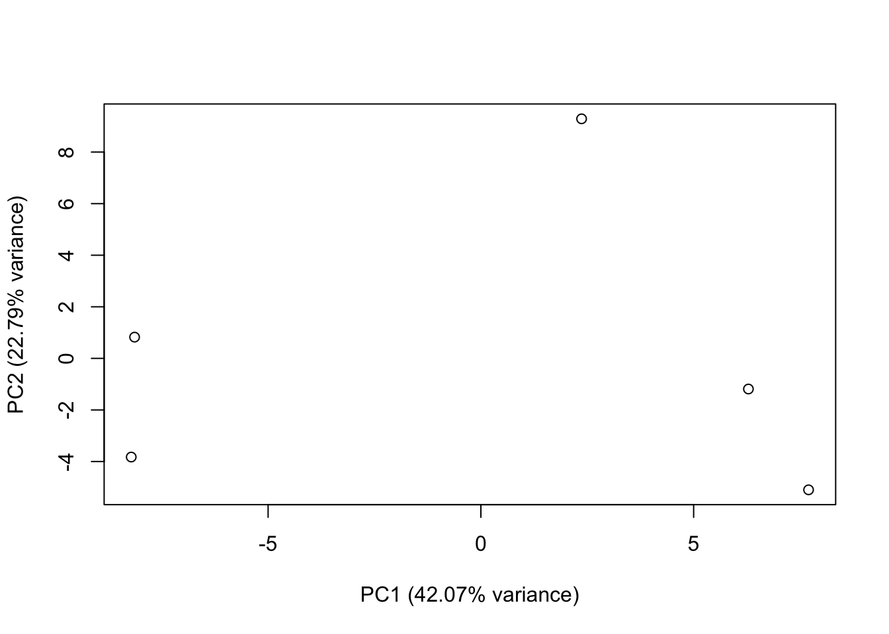
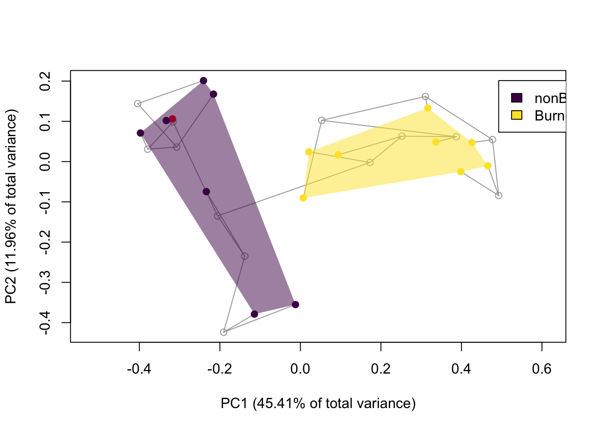
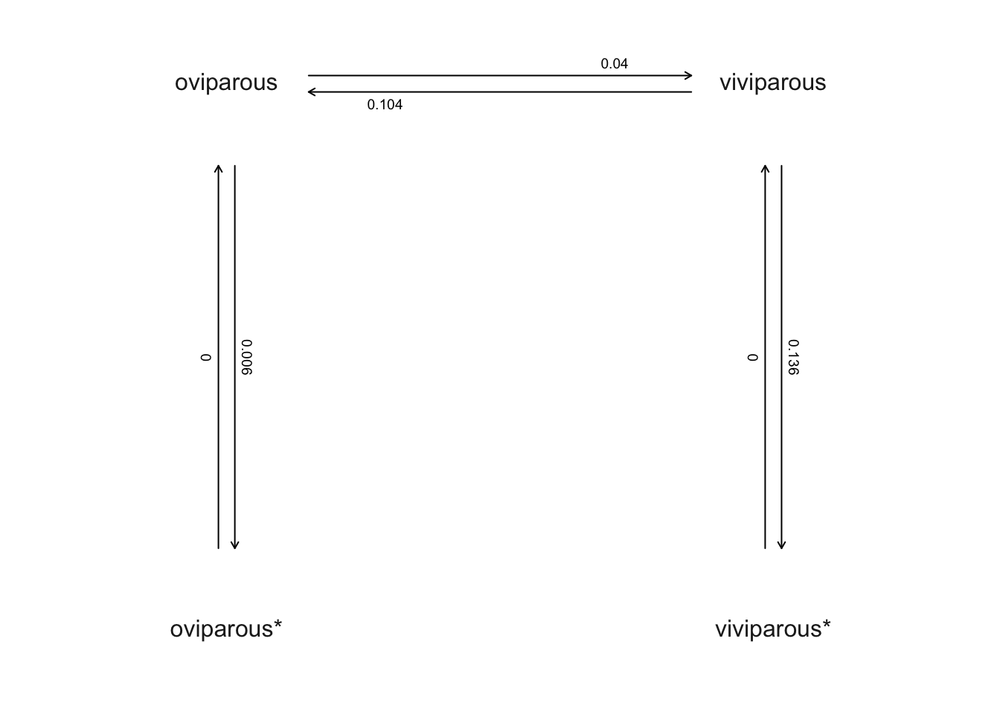
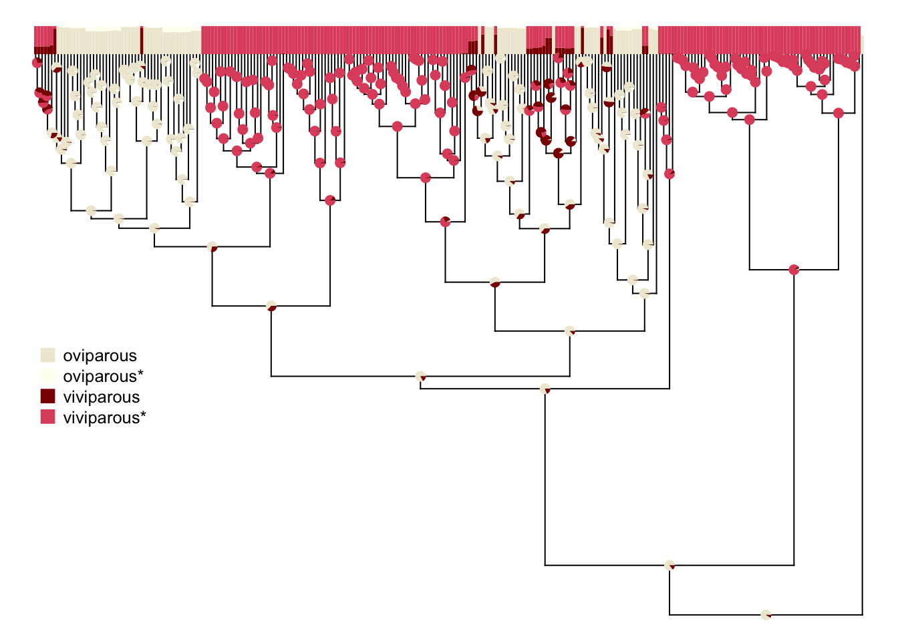

if(length(c("phytools", "geiger", "Claddis", "dispRity", "caper")[!c("phytools", "geiger", "Claddis", "dispRity", "caper") %in% installed.packages()[,"Package"]]) > 0){
install.packages(c("phytools", "geiger", "Claddis", "dispRity", "caper")[!c("phytools", "geiger", "Claddis", "dispRity", "caper") %in% installed.packages()[,"Package"]])
}Ordination and phylogenetic comparative methods
1.0 Introduction
This tutorial will introduce you to the various functions you can use to ordinate your data outside of the Vegan package. It will also take you show you how to perform stochastic character mapping (a form of ancestral state estimation) using Phytools and how to test for phylogenetic signal in categorical and continuous data using the Geiger package.
1.1 Load packages
We will generate distance matrices using base R, Vegan, dispRity, and Claddis. Let’s make sure the latter packages are installed and load them.
1.2 Principal components analysis by hand
This may seem exhaustive but I think it’s useful to break these analyses down. Let’s generate a data matrix first.
data <- matrix(sample(c(0,1), 100, replace = T), nrow = 10)
rownames(data) <- paste0("Species_",seq(1,10,1))
colnames(data) <- paste0("C",seq(1,10,1))Now let’s get the column means so we can can see how we center our data.
col.means <- apply(data, 2, mean)
# get centred matrix
centred.matrix <- data
centred.matrix[,1] <- centred.matrix[,1]-col.means[1]
centred.matrix[,2] <- centred.matrix[,2]-col.means[2]Fortunately, the cov function does this step for us before computing a covariance matrix. Let’s do that now.
covariance <- cov(data)Finally, let’s derive our eigenvectors and eigenvalues.
eigenvalues <- eigen(covariance)$values
eigenvectors <- eigen(covariance)$vectorsAlmost there! We have our axes! To get the scores for our ‘species’, we need multiple our centred matrix by our eigenvector matrix (aren’t you glad we have functions to do this for us?)
# get principal component scores
# we do this by getting the dot product
PCs <- centred.matrix%*%eigenvectorsNow let’s plot our ordination.
plot(PCs)2.0 Base R
2.1 Principal components analysis
Let’s start simple with base R. Ordination in base R is wonderfully simple. For principal component analysis, we can use the prcomp function. First, let’s generate a continuous dataset.
c.data <- matrix(runif(100,0,10), nrow = 5)
rownames(c.data) <- paste0("Species_",seq(1,5,1))
colnames(c.data) <- paste0("C",seq(1,20,1))
View(c.data)Let’s ordinate it.
PCA <- prcomp(c.data)This doesn’t provide the eigenvalues by default, so we’ll need to use the eigen function to acquire them (there is a unique solution to eigen-based methods, so these will match the eigenvectors of our PCA object).
c.eigen <- eigen(cov(c.data), only.values = T)$valuesLet’s convert these into relative eigenvalues so we can so how the total variance is apportioned across the different axes.
names(c.eigen) <- paste0("PC",seq(1,20,1))
c.eigen <- c.eigen/sum(c.eigen)
barplot(c.eigen, ylab = "Proportion of eigenvalues")Looks like the first four axes are by far the most informative, with the first two capturing over 50% of the variance together. Let’s plot these for now.
plot(PCA$x, xlab = paste0("PC1 (",c.eigen[1]*100,"% variance)"), ylab = paste0("PC2 (",c.eigen[2]*100,"% variance)"))
2.2 Principal coordinates analysis
Lets generate a Euclidean distance matrix.
dist <- dist(data)Now let’s ordinate it using cmdscale (the base R function for principal coordinates analysis). Now it is worth noting that by default that cmdscale fits the data to just two axes. We don’t want this. The maximum is n-1, where n is the number of points/species. In this case, we have 10, so let’s set k to 9.
PCoA <- cmdscale(sqrt(dist), k = 9, eig = T)Let’s check the eigenvalues. Cmdscale returns them for us if eigen = TRUE.
d.eigen <- PCoA$eig
names(d.eigen) <- paste0("PC",seq(1,10,1))
d.eigen <- d.eigen/sum(d.eigen)
barplot(d.eigen, ylab = "Proportion of eigenvalues")
The variation hasn’t been summarised particularly well here, so any visualisations we derive will be limited in utility. We need to take a more quantitative approach to analysing this data (more on this soon!)
3.0 Ape
Ape provides an alternative to cmdscale that allows you to apply the Cailliez or Lingoes correction during the ordination process. This is done through the correction argument. It also returns all of the eigenvalues and eigenvectors by default, EXCEPT for those with negative eigenvalues. As such, you have to transform your data and/or correct it each time you use this function to be sure you are not working with a misrepresentation of your data.
library(ape)
# square root transformation
ape.PCoA.sq <- pcoa(sqrt(dist), correction = "none")
# square root transformation + Cailliez correction
ape.PCoA.C <- pcoa(sqrt(dist), correction = "cailliez")
# square root transformation + Lingoes correction
ape.PCoA.L <- pcoa(sqrt(dist), correction = "lingoes")Why not try plotting them and seeing how they differ? What about from an ordination of untransformed, uncorrected data?
4.0 Claddis
Let’s try ordinating data in Claddis! First let’s load the library and load the dataset.
library(Claddis)Loading required package: phytoolsLoading required package: mapsLoading required package: strapLoading required package: geoscalelibrary(ape)
data(day_2016)Let’s drop the three continuous characters as before.
day_2016[[2]] <- NULLCladdis only supports principal coordinates analysis. However it does this all in one.
clad.PCoA <- ordinate_cladistic_matrix(day_2016, distance_metric = "mord", distance_transformation = "sqrt", correction = "none")The following taxa had to be removed to produce a complete distance matrix: Lycaenodon_longicepsYou’ll notice we received a warning that Claddis was unable to produce a complete distance matrix (essential for ordination). We can do this ahead of time by submitting a distance matrix to the trim_matrix function.
clad.dist <- calculate_morphological_distances(day_2016, distance_metric = "mord", distance_transformation = "sqrt")
trimmed.clad.dist <- trim_matrix(clad.dist$distance_matrix)You can see the taxa that have been trimmed by accessing the “removed_taxa” element of the object produced by trim_matrix. You can isolate the new distance matrix and add it to the distance matrix object as well.
trimmed.clad.dist$removed_taxa[1] "Lycaenodon_longiceps"clad.dist$distance_matrix <- trimmed.clad.dist$distance_matrixAnyway, back to the ordination object. Claddis calls the ape pcoa function to handle its ordination. As such, it can apply the Cailliez and Lingoes correction through the correction argument, as well as apply a square root transformation. Unfortunately, the ape pcoa function does not return the eigenvectors and eigenvalues of any negative eigenvalues that might result, so we can’t check if we need to transform our data in the first place. However, no information is lost during the square root transformation so it doesn’t hurt to apply it in all cases.
barplot(clad.PCoA$values$Relative_eig, ylab = "Proportion of eigenvalues")Claddis has a wide variety of plotting functions that allow you to generate two and three dimensional plots. The standard, plot_morphospace, allows you to plot regular plot.
plot_morphospace(clad.PCoA)It allows you to add convex hulls.
# define groups
taxon_groups <- list(nonBurnetiamorpha = c("Biarmosuchus_tener",
"Hipposaurus_boonstrai", "Bullacephalus_jacksoni", "Pachydectes_elsi",
"Ictidorhinus_martinsi", "RC_20", "Herpetoskylax_hopsoni"),
Burnetiamorpha = c("Lemurosaurus_pricei", "Lobalopex_mordax",
"Lophorhinus_willodenensis", "Proburnetia_viatkensis", "Lende_chiweta",
"Paraburnetia_sneeubergensis", "Burnetia_mirabilis", "BP_1_7098"))
class(taxon_groups) <- "taxonGroups"
# plot
plot_morphospace(pcoa_input = clad.PCoA, plot_taxon_names = F, taxon_groups = taxon_groups, plot_convex_hull = T)It allows you to add trees.
# define tree - you can load in a nexus file or .tre file instead of writing it manually.
time_tree <- read.tree(text = paste0("(Biarmosuchus_tener:0.5,",
"(((Hipposaurus_boonstrai:3.5,(Bullacephalus_jacksoni:0.75,",
"Pachydectes_elsi:0.75):0.75):0.75,(Lemurosaurus_pricei:7.166666667,",
"(Lobalopex_mordax:4.333333333,((Lophorhinus_willodenensis:3.666666667,",
"(Proburnetia_viatkensis:0.8333333333,(Lende_chiweta:2,",
"(Paraburnetia_sneeubergensis:1,Burnetia_mirabilis:2):1):1.833333333)",
":0.8333333333):0.8333333333,(BP_1_7098:2.25,Niuksenitia_sukhonensis:",
"1.25):1.25):0.8333333333):0.8333333333):3.083333333):1.95,",
"(Ictidorhinus_martinsi:15.9,(RC_20:11.6,(Herpetoskylax_hopsoni:11.3,",
"Lycaenodon_longiceps:0.3):0.3):0.3):0.3):0.3);"))
# add a root.time element, specifying just that
time_tree$root.time <- 269.5
# now run the ordination again, submitting the tree via argument time_tree
clad.PCoA <- ordinate_cladistic_matrix(day_2016, distance_transformation = "sqrt", correction = "none", time_tree = time_tree)
Note:
This function is redundant with 'phytools::ancr' in situations in
which it should be used (symmetric Q matrices) & invalid for non-
symmetric Q matrices (e.g., model='ARD').
Note:
This function is redundant with 'phytools::ancr' in situations in
which it should be used (symmetric Q matrices) & invalid for non-
symmetric Q matrices (e.g., model='ARD').
Note:
This function is redundant with 'phytools::ancr' in situations in
which it should be used (symmetric Q matrices) & invalid for non-
symmetric Q matrices (e.g., model='ARD').
Note:
This function is redundant with 'phytools::ancr' in situations in
which it should be used (symmetric Q matrices) & invalid for non-
symmetric Q matrices (e.g., model='ARD').
Note:
This function is redundant with 'phytools::ancr' in situations in
which it should be used (symmetric Q matrices) & invalid for non-
symmetric Q matrices (e.g., model='ARD').
Note:
This function is redundant with 'phytools::ancr' in situations in
which it should be used (symmetric Q matrices) & invalid for non-
symmetric Q matrices (e.g., model='ARD').
Note:
This function is redundant with 'phytools::ancr' in situations in
which it should be used (symmetric Q matrices) & invalid for non-
symmetric Q matrices (e.g., model='ARD').
Note:
This function is redundant with 'phytools::ancr' in situations in
which it should be used (symmetric Q matrices) & invalid for non-
symmetric Q matrices (e.g., model='ARD').
Note:
This function is redundant with 'phytools::ancr' in situations in
which it should be used (symmetric Q matrices) & invalid for non-
symmetric Q matrices (e.g., model='ARD').
Note:
This function is redundant with 'phytools::ancr' in situations in
which it should be used (symmetric Q matrices) & invalid for non-
symmetric Q matrices (e.g., model='ARD').
Note:
This function is redundant with 'phytools::ancr' in situations in
which it should be used (symmetric Q matrices) & invalid for non-
symmetric Q matrices (e.g., model='ARD').
Note:
This function is redundant with 'phytools::ancr' in situations in
which it should be used (symmetric Q matrices) & invalid for non-
symmetric Q matrices (e.g., model='ARD').
Note:
This function is redundant with 'phytools::ancr' in situations in
which it should be used (symmetric Q matrices) & invalid for non-
symmetric Q matrices (e.g., model='ARD').
Note:
This function is redundant with 'phytools::ancr' in situations in
which it should be used (symmetric Q matrices) & invalid for non-
symmetric Q matrices (e.g., model='ARD').
Note:
This function is redundant with 'phytools::ancr' in situations in
which it should be used (symmetric Q matrices) & invalid for non-
symmetric Q matrices (e.g., model='ARD').
Note:
This function is redundant with 'phytools::ancr' in situations in
which it should be used (symmetric Q matrices) & invalid for non-
symmetric Q matrices (e.g., model='ARD').
Note:
This function is redundant with 'phytools::ancr' in situations in
which it should be used (symmetric Q matrices) & invalid for non-
symmetric Q matrices (e.g., model='ARD').
Note:
This function is redundant with 'phytools::ancr' in situations in
which it should be used (symmetric Q matrices) & invalid for non-
symmetric Q matrices (e.g., model='ARD').
Note:
This function is redundant with 'phytools::ancr' in situations in
which it should be used (symmetric Q matrices) & invalid for non-
symmetric Q matrices (e.g., model='ARD').
Note:
This function is redundant with 'phytools::ancr' in situations in
which it should be used (symmetric Q matrices) & invalid for non-
symmetric Q matrices (e.g., model='ARD').
Note:
This function is redundant with 'phytools::ancr' in situations in
which it should be used (symmetric Q matrices) & invalid for non-
symmetric Q matrices (e.g., model='ARD').
Note:
This function is redundant with 'phytools::ancr' in situations in
which it should be used (symmetric Q matrices) & invalid for non-
symmetric Q matrices (e.g., model='ARD').
Note:
This function is redundant with 'phytools::ancr' in situations in
which it should be used (symmetric Q matrices) & invalid for non-
symmetric Q matrices (e.g., model='ARD').
Note:
This function is redundant with 'phytools::ancr' in situations in
which it should be used (symmetric Q matrices) & invalid for non-
symmetric Q matrices (e.g., model='ARD').
Note:
This function is redundant with 'phytools::ancr' in situations in
which it should be used (symmetric Q matrices) & invalid for non-
symmetric Q matrices (e.g., model='ARD').
Note:
This function is redundant with 'phytools::ancr' in situations in
which it should be used (symmetric Q matrices) & invalid for non-
symmetric Q matrices (e.g., model='ARD').
Note:
This function is redundant with 'phytools::ancr' in situations in
which it should be used (symmetric Q matrices) & invalid for non-
symmetric Q matrices (e.g., model='ARD').
Note:
This function is redundant with 'phytools::ancr' in situations in
which it should be used (symmetric Q matrices) & invalid for non-
symmetric Q matrices (e.g., model='ARD').
Note:
This function is redundant with 'phytools::ancr' in situations in
which it should be used (symmetric Q matrices) & invalid for non-
symmetric Q matrices (e.g., model='ARD').
Note:
This function is redundant with 'phytools::ancr' in situations in
which it should be used (symmetric Q matrices) & invalid for non-
symmetric Q matrices (e.g., model='ARD').
Note:
This function is redundant with 'phytools::ancr' in situations in
which it should be used (symmetric Q matrices) & invalid for non-
symmetric Q matrices (e.g., model='ARD').
Note:
This function is redundant with 'phytools::ancr' in situations in
which it should be used (symmetric Q matrices) & invalid for non-
symmetric Q matrices (e.g., model='ARD').
Note:
This function is redundant with 'phytools::ancr' in situations in
which it should be used (symmetric Q matrices) & invalid for non-
symmetric Q matrices (e.g., model='ARD').
Note:
This function is redundant with 'phytools::ancr' in situations in
which it should be used (symmetric Q matrices) & invalid for non-
symmetric Q matrices (e.g., model='ARD').The following taxa or nodes had to be removed to produce a complete distance matrix: BP_1_7098%%Niuksenitia_sukhonensis, Niuksenitia_sukhonensisYou can see a couple of taxa have been dropped for the sake of a complete distance matrix automatically. The warnings that pop up are a reflection that Claddis is slightly out of date. As such, you’ll probably want to use other methods for generating your ancestral state data and then just derive a distance matrix from a data matrix including tip and node values, ordinate it without submitting a tree, and then insert it into an object that was generating using a tree to replace the dubious PCoA scores (this is why Claddis is difficult). Anyway, let’s plot the result:
plot_morphospace(clad.PCoA, plot_taxon_names = F, taxon_groups = taxon_groups, plot_convex_hulls = TRUE, plot_internal_nodes = TRUE)
See the below help documentation to explore what the other functions can do for you:
?plot_chronophylomorphospace?plot_morphospace_stack?plot_multi_morphospace5.0 dispRity
dispRity has functionality for importing data from Claddis and geomorph and ordinating it, using principal coordinates analysis and principal components analysis respectively. Let’s take a look.
library(dispRity)5.1 Claddis ordination
Now let’s load in some Claddis data.
data("michaux_1989")Now we ordinate!
dispR.clad.ord <- Claddis.ordination(michaux_1989, distance = "mord", distance_transformation = "sqrt")dispRity doesn’t have its own plotting function. However, that just means you can use base R to plot it. There are other packages we will take a look at later on during the course.
plot(dispR.clad.ord)You might have noticed the output of this function is pretty bare. This is because it passes the ordination off to cmdscale (base R function for PCoA). You should be able to pass on a request to this function to return the eigenvalues using the arg.cmdscale argument of the Claddis.ordination function, but this doesn’t seem to work consistently (might be bugged).
5.2 Geomorph ordination
Let’s load in some data.
library(geomorph)Loading required package: RRPP
Attaching package: 'RRPP'The following object is masked from 'package:dispRity':
add.treeLoading required package: rglLoading required package: Matrix
Attaching package: 'geomorph'The following object is masked from 'package:dispRity':
combine.subsetsdata("plethodon")Let’s ordinate it (after we perform GPS).
procrustes <- gpagen(plethodon$land)
Performing GPA
|
| | 0%
|
|================== | 25%
|
|=================================== | 50%
|
|======================================================================| 100%
Making projections... Finished!dispR.geo.ord <- geomorph.ordination(procrustes)You can also ordinate a geomorph data frame (handy for compatability).
geomorph_df <- geomorph.data.frame(procrustes, species = plethodon$species)
geomorph.ordination(geomorph_df) ---- dispRity object ----
2 customised subsets for 40 elements in one matrix:
species.Jord, species.Teyah.6.0 Testing for phylogenetic signal in discrete and continuous (non-landmark) data using Geiger and Phytools
Pagel’s lambda is a robust measure of the amount of non-random variance in a dataset is explained by the associated tree. The R package phytools let’s us derive an estimate of lambda by fitting a model of phylogenetic signal to our data. This works for continuous data. Geiger let’s us derive it for discrete data. The former is particularly important, as this means you can test for phylogenetic in any ordinated data set (PC scores are continuous).
Load the library. We’ll load phytools too as it will give us some data to work with.
library(geiger)
library(phytools)6.1 Continuous data
Load the data.
data("anoletree")
data("anole.data")
name.check(anoletree, anole.data)[1] "OK"Using phytools, you can calculate Bloomberg’s K, which compares the variance of PICs to what we would espect under a Brownian motion model. K = 1 means that relatives resemble one another as much as we should expect under BM; K < 1 means that there is less “phylogenetic signal” than expected under BM, while K > 1 means that there is more. A significant p-value returned from phylosignal tells you that there is significant phylogenetic signal - that is, close relatives are more similar than random pairs of species.
anoleSize <- anole.data[, 1]
names(anoleSize) <- rownames(anole.data)
phylosig(anoletree, anoleSize, test = T)
Phylogenetic signal K : 1.69526
P-value (based on 1000 randomizations) : 0.001 Now let’s calculate Pagel’s lambda. Lambda is a tree transformation that stretches tip branches relative to internal branches, making the tree more and more like a complete polytomy. If our estimated lambda = 0, then the traits are inferred to have no phylogenetic signal. Lambda = 1 corresponds to a Brownian motion model; 0 < lambda < 1 is in between.
phylosig(anoletree, anoleSize, method = "lambda", test = T)
Phylogenetic signal lambda : 0.999927
logL(lambda) : 5.25315
LR(lambda=0) : 97.8975
P-value (based on LR test) : 4.40613e-23 That is some strong phylogenetic signal! You could also achieve this by using fitContinuous in Geiger. Let’s compare this to a simple Brownian motion model.
lambdaModel <- fitContinuous(anoletree, anoleSize, model = "lambda")Warning in fitContinuous(anoletree, anoleSize, model = "lambda"):
Parameter estimates appear at bounds:
lambdabrownianModel <- fitContinuous(anoletree, anoleSize)
lambdaModel$opt$aicc[1] -4.204549brownianModel$opt$aicc[1] -6.360343The lower the better when it comes to AIC scores, so our lambda model is a better fit for the data. You can fit all sorts of models with fitContinuous. Check out the documentation and have a think about whether you might want fit any others.
?fitContinuous6.2 Discrete data.
With discrete data, we need to use a different statistic, Fritz & Purvis’s D. It is the sum of changes in estimated nodal values of a binary trait along edges in a phylogeny (D) provides a measure of the phylogenetic signal in that trait (Fritz and Purvis, 2010). If a trait is highly conserved, with only a basal division between two clades expressing either trait value, then the only change will be along the two daughters at the root. This will give a summed value of 1: the two differences between the root nodal value of 0.5 and the ancestors of the 1 and 0 clades. In contrast, if the trait is labile, more differences will be observed and the sum will be higher.
We will calculate this using the phylo.D function from the caper package. First we will load the data and convert it to the necessay format.
library(caper)Loading required package: MASSLoading required package: mvtnormdata(BritishBirds)
BritishBirds <- comparative.data(BritishBirds.tree, BritishBirds.data, binomial)Calculate Fritz & Purvis’ D
redPhyloD <- phylo.d(BritishBirds, binvar=Red_list)
print(redPhyloD)
Calculation of D statistic for the phylogenetic structure of a binary variable
Data : BritishBirds.data
Binary variable : Red_list
Counts of states: 0 = 149
1 = 32
Phylogeny : BritishBirds.tree
Number of permutations : 1000
Estimated D : 0.5597442
Probability of E(D) resulting from no (random) phylogenetic structure : 0.001
Probability of E(D) resulting from Brownian phylogenetic structure : 0.017The estimated D is below 1 and the probablility of this pattern emerging from Brownian phylogenetic structure is higher than it being random. This indicates that phylogenetic signal is at least partially responsible or the variance in the data.
7.0 Ancestral state estimation using Phytools
Phytools supports a wide variety of ancestral state estimation. There are plenty to choose from and I’d do some reading around to determine which models will work best for you. I’ve stored a couple of tutorials in the session folder for the estimation of continuous ancestral states under Brownian motion and discrete ancestral states under the Mk model as HTML documents. It might be worth looking through these in your spare time. In the meantime, we’ll go through ancr, a function which lets you estimate ancestral states under almost any model, and Bayesian stochastic character mapping.
As stated previously, you can should estimate your ancestral states prior to ordination and distance matrix derivation (if applicable), add these values to your main data matrix, and then just analyse the supplemented matrix as a normal matrix. Note that geomorph let’s you do this with GPA-aligned coordinates. This is absolutely fine.
7.1 ancr
The idea of this (generic) method is that it takes a fitted discrete character evolution (e.g., from fitMk or fitHRM) and then computes the marginal reconstructions under that model. Marginal ancestral states are also referred to as scaled likelihoods, and it’s valid to interpret them as the probabilities that each node is in each of the different states, conditioning on the fitted model. (This is why they are also called “empirical Bayes” posterior probabilities – because they are posterior probabilities but in which we condition, normally, on the ML value of our transition model, Q.)
To illustrate this method, we’re going to apply it to a trait evolution scenario for the so-called “hidden-rates-model” of Beaulieu et al. (2013). For this, we’ll use a dataset of parity mode in liolaemid lizards from Esquerré et al. (2018). Previous analyses found that the best-supported model for these data was a class of hidden-rates-model that I refer to as the ‘umbral’ model in which we have hidden states of the character (say 0* and 1* for an observed character with two levels 0 & 1), but in which evolution always had to proceed 0* ⇆ 0 ⇆ 1 ⇆ 1*. The idea is to capture “cold” and “hot” conditions for the state, in which when in the cold condition the character can’t evolve at all without first transitioning back to the hot condition.
Load the tree.
liolaemid.tree<-read.nexus(
file="http://www.phytools.org/Rbook/7/Liolaemidae.MCC.nex")
liolaemid.tree<-untangle(ladderize(liolaemid.tree),"read.tree")
liolaemid.tree
Phylogenetic tree with 258 tips and 257 internal nodes.
Tip labels:
Liolaemus_albiceps, Liolaemus_irregularis, Liolaemus_ornatus, Liolaemus_calchaqui, Liolaemus_crepuscularis, Liolaemus_lavillai, ...
Rooted; includes branch lengths.Load the data.
liolaemid.data<-read.csv(
file="http://www.phytools.org/Rbook/7/Liolaemidae.data.csv",
row.names=1,stringsAsFactors=TRUE)
parity_mode<-setNames(liolaemid.data$parity_mode,
rownames(liolaemid.data))
levels(parity_mode)<-c("oviparous","viviparous")
head(parity_mode)Ctenoblepharys_adspersa Liolaemus_abaucan Liolaemus_albiceps
oviparous oviparous viviparous
Liolaemus_andinus Liolaemus_annectens Liolaemus_anomalus
viviparous viviparous oviparous
Levels: oviparous viviparousSo far so good. Now, we’ll fit our model using phytools::fitHRM. Be forewarned: this takes a while!
hrm.umbral<-fitHRM(liolaemid.tree,parity_mode,umbral=TRUE,
pi="fitzjohn",opt.method="optimParallel",rand_start=TRUE)
This is the design matrix of the fitted model.
Does it make sense?
oviparous oviparous* viviparous viviparous*
oviparous 0 1 2 0
oviparous* 3 0 0 0
viviparous 4 0 0 5
viviparous* 0 0 6 0Warning in log(comp[1:M + N]): NaNs producedlog-likelihood from current iteration: -63.5918
--- Best log-likelihood so far: -63.5918 ---Warning in log(comp[1:M + N]): NaNs producedlog-likelihood from current iteration: -65.9156
--- Best log-likelihood so far: -63.5918 ---Warning in log(comp[1:M + N]): NaNs producedlog-likelihood from current iteration: -63.4594
--- Best log-likelihood so far: -63.4594 ---
log-likelihood from current iteration: -65.9463
--- Best log-likelihood so far: -63.4594 ---Warning in log(comp[1:M + N]): NaNs producedlog-likelihood from current iteration: -63.592
--- Best log-likelihood so far: -63.4594 ---
log-likelihood from current iteration: -60.6925
--- Best log-likelihood so far: -60.6925 ---
log-likelihood from current iteration: -65.916
--- Best log-likelihood so far: -60.6925 ---Warning in log(comp[1:M + N]): NaNs producedlog-likelihood from current iteration: -65.947
--- Best log-likelihood so far: -60.6925 ---Warning in log(comp[1:M + N]): NaNs producedlog-likelihood from current iteration: -63.4594
--- Best log-likelihood so far: -60.6925 ---Warning in log(comp[1:M + N]): NaNs producedlog-likelihood from current iteration: -65.9156
--- Best log-likelihood so far: -60.6925 ---hrm.umbralObject of class "fitHRM".
Observed states: [ oviparous, viviparous ]
Number of rate categories per state: [ 2, 2 ]
Fitted (or set) value of Q:
oviparous oviparous* viviparous viviparous*
oviparous -1.962662 0.039898 1.922764 0.00000
oviparous* 0.037901 -0.037901 0.000000 0.00000
viviparous 2.684883 0.000000 -3.099423 0.41454
viviparous* 0.000000 0.000000 0.000000 0.00000
Fitted (or set) value of pi:
oviparous oviparous* viviparous viviparous*
0.034102 0.939368 0.026530 0.000000
due to treating the root prior as (a) nuisance.
Log-likelihood: -60.692453
Optimization method used was "optimParallel"
R thinks it has found the ML solution.If we graph our fitted model, we should see that it corresponds nicely to the process we hypothesized.
plot(hrm.umbral,spacer=0.3,offset=0.03,
mar=rep(0.1,4))
Having fit this model to our data, we just need to pass the fitted object directly to our new ancr (formerly, briefly anceb) as follows. The only argument I’m going to specify is tips=TRUE which will return the posterior probabilities that each of the leaves of the tree are in each of the two unobserved conditions of the character, given its observed state.
parity_ancr<-ancr(hrm.umbral,tips=TRUE)
parity_ancrMarginal ancestral state estimates:
oviparous oviparous* viviparous viviparous*
259 0.001315 0.997889 0.000796 0
260 0.020644 0.968556 0.010800 0
261 0.023006 0.965186 0.011808 0
262 0.015974 0.976061 0.007966 0
263 0.085224 0.867177 0.047599 0
264 0.071613 0.893705 0.034682 0
...
Log-likelihood = -60.692453 Lastly, let’s graph these probabilities onto the tree. This is a pretty swish bit of plotting code courtesy of Liam Revell’s blog (a place I’d highly recommend visiting).
# set max node height
h<-max(nodeHeights(liolaemid.tree))
# plot
plotTree(liolaemid.tree,ftype="off",lwd=1,
ylim=c(0,1.05*h),direction="upwards")
pp<-get("last_plot.phylo",envir=.PlotPhyloEnv)
cols<-setNames(c("#f0ead6","#fffff2","darkred",palette()[2]),
colnames(parity_ancr$ace))
# plot boxes along top of tree
for(i in 1:Ntip(liolaemid.tree)){
tcp<-c(0,cumsum(parity_ancr$ace[liolaemid.tree$tip.label[i],]))
tcp<-tcp*0.05*h
for(j in 2:length(tcp)){
polygon(rep(pp$xx[i],4)+c(-0.5,-0.5,0.5,0.5),
h+c(tcp[j-1],tcp[j],tcp[j],tcp[j-1]),
border=FALSE,col=cols[j-1])
}
}
# set legend
legend(x=0,y=0.5*h,colnames(parity_ancr$ace),pch=15,
col=cols,pt.cex=1.5,cex=0.8,bty="n")
# set node labels
par(fg="transparent")
nodelabels(pie=parity_ancr$ace[1:Nnode(liolaemid.tree)+
Ntip(liolaemid.tree),],piecol=cols,cex=0.3)
7.2 stochastic character mapping
Stochastic character mapping is a fully Bayesian approach to ancestral state estimation. Phytools supports this via the make.simmap function. This is my preferred option for the ancestral state estimation of discrete characters.
Generate tree and Q matrix (defining substitution rates), then add character data to tree.
tree <- pbtree(n = 200, scale = 1)
Q <- matrix(c(-1,1,1,-1),2,2)
rownames(Q) <- colnames(Q) <- letters[1:nrow(Q)]
tree <- sim.history(tree,Q,anc="a")Done simulation(s).Now conduct stochastic character mapping.
mtrees <- make.simmap(tree, tree$states, model="ER", nsim = 100, pi="estimated")Using pi estimated from the stationary distribution of Q assuming a flat prior.
pi =
a b
0.5 0.5
make.simmap is sampling character histories conditioned on
the transition matrix
Q =
a b
a -1.034528 1.034528
b 1.034528 -1.034528
(estimated using likelihood);
and (mean) root node prior probabilities
pi =
a b
0.5 0.5 Done.Now let’s plot the first result using the bespoke function phytools provides. These results are binary because it’s just one tree.
cols <- setNames(c("blue","red"), letters[1:nrow(Q)])
plotSimmap(mtrees[[1]], cols , pts=F , ftype="off")One advantage of stochastic character mapping is that we can compute the posterior probabilities of each character state being present at each node. Let’s summarise across all the simmaps we produced. First we’ll define a function that will do this for us.
# function to compute the states
foo <- function(x){
y <- sapply(x$maps,function(x) names(x)[1])
names(y) <- x$edge[,1]
y <- y[as.character(length(x$tip)+1:x$Nnode)]
return(y)
}
# now apply the function
AA <- sapply(mtrees,foo)
# convert to data that be plotted as pie charts.
piesA <- t(apply(AA,1,function(x,levels,Nsim) summary(factor(x,levels))/Nsim,levels=letters[1:3], Nsim=100))Now let’s plot the summary of our analyses. This is a fun way of see how characters evolve along a tree.
plot.phylo(tree,no.margin=TRUE,show.tip.label=F)
nodelabels(pie=piesA,cex=0.6,piecol=cols)In your disparity analyses, you will have to decide on a probability threshold for determining character scores at each node. This is entirely arbitrary and can be worth exploring.